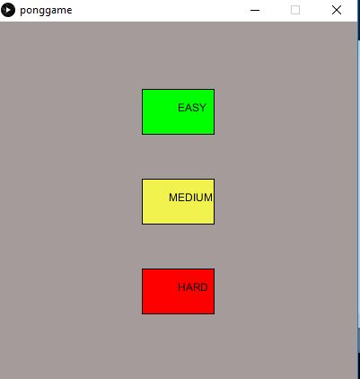
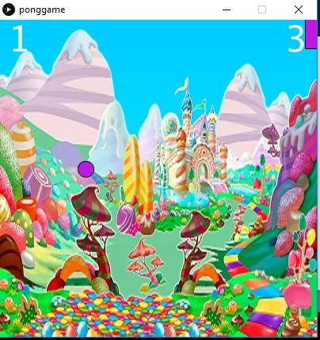
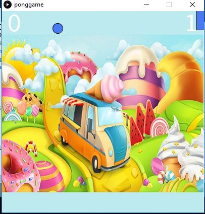
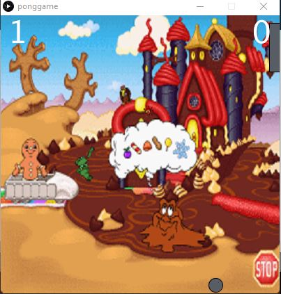

Candy Land Game
a simple one player gameAlongside my partner, I worked to code our own version of a single player paddle game with the theme of Candy Land. Our game consists of three different levels: easy, medium, and hard. The first player to five wins. As the difficulty of the level increases so does the speed of the ball, making it easier for the computer to win.
   